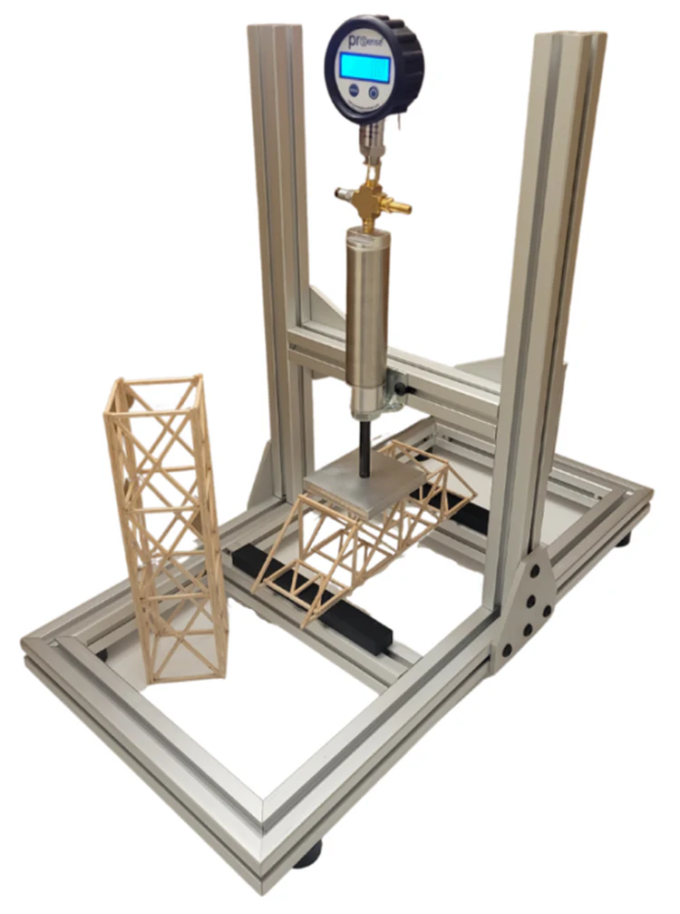

Build a Water Tower (Weeks 3-5): Work in pairs using safe work methods, accurate measurement and quality joints to create a functional structure based on your Toolkit 3 design.
Test your tower systematically: Conduct controlled load tests, observe deflection and failure modes, and record accurate data.
Record and analyze data: Document loads, deflection and failure modes, then use this evidence to explain structural performance using engineering terminology from Toolkits 1-3.
Create comprehensive documentation: Prepare a clear project folio that demonstrates professional engineering practice, including design, build log, test data, and evaluation.
Timing: Complete your water tower build, test, and folio in Weeks 3-5. This is your main Term 1 project. Use the concepts from Toolkits 1-3 throughout the build and evaluation process.
Google Classroom Check-in
Complete the Precision Measurement task and have your measurements ready before building or testing.
Theory
Key Notes - From Plan to Tested Structure
Why this matters: Toolkit 4 is where you bring together the safety, materials and structural ideas from Toolkits 1-3. The goal is not just to "build something" but to demonstrate professional engineering practice.
Your projects should demonstrate:
Planned sequence: Follow a systematic sequence of steps so the tower and beam are built safely and consistently.
Build quality: Produce work that is square, symmetrical and properly jointed so it behaves like the structure you designed.
Controlled testing: Run controlled tests that give you trustworthy data (load, deflection, failure mode).
Technical communication: Explain results using correct structural language (loads, members, buckling, cracking, strength-to-weight).
Comparing Joining Methods
Engineers choose joints based on strength, permanence and cost. For your tower and future projects, consider:
Adhesives (Glues): Good for distributing stress over an area. PVA is standard for timber (needs clamping); Epoxy (Araldite) fills gaps and bonds metals/plastics; Cyanoacrylate (Super Glue) is fast but brittle. Pros: Smooth finish, seals joints. Cons: Needs clean surface, curing time, harder to inspect.
Mechanical Fasteners (Bolts, Screws, Rivets):
Bolts/Nuts: Strong, removable, high clamping force. Good for maintenance.
Rivets: Permanent, light, good for thin sheet metal (like your toolboxes later). Vibration resistant.
Screws: Quick, self-tapping. Good for timber/plastic.
Thermal Joining (Welding/Soldering):
Welding: Melts the base metal to fuse parts as one. Strongest joint, but heat can distort the part.
Soldering/Brazing: Melts a filler metal (like solder) into the joint without melting the base. Good for electronics or plumbing, less structural strength than welding.
Selection Rule: Use bolts if it needs to come apart; weld or rivet if it must stay together; glue if you need a seal or invisible joint (but watch the curing time!).
Build Quality and Tolerances
Check dimensions against the design sheet (height, base size, member lengths). Small errors can change how loads are shared.
Use squares and jigs where possible so bases and frames are 90° and members line up at nodes.
Keep members straight and untwisted; avoid accidental “kinks” or gaps which concentrate stress.
Make joints consistent: similar glue area, fastener spacing and overlap on each side of the tower.
Linking back to theory
When you assemble and test, deliberately connect what you see to earlier toolkits:
Toolkit 1 (WHS): SWMS steps, hierarchy of control, safe use of hand tools/drill/glue gun during build and test.
Toolkit 2 (Structural Concepts): how dead/live loads, truss layout, struts/ties and buckling show up during testing.
Toolkit 3 (Design & Planning): how your design decisions (layout, member sizing, joints) affect actual performance.
In your folio, avoid writing "it just broke". Instead, aim for sentences like: "Member C3, a long slender compression strut, buckled near the mid-height because it was unbraced and carried most of the compressive load from the central deck."
Water Tower – Build Protocol
Timing: Build your tower in Weeks 3-5 based on your Toolkit 3 design. Complete your tower folio by the end of Week 5.
1) Planning & set-out
Read the design brief: required height, footprint limits, allowable materials, test method.
Prepare a simple cutting list and build sequence (e.g. base, legs, bracing, deck, final checks).
Check SWMS from Toolkit 1 covers cutting, drilling, gluing and tower testing (line of fire, PPE, clamping).
2) Measuring, cutting and assembly
Measure twice, cut once; mark from a datum edge to reduce error build-up.
Clamp material firmly before cutting or drilling; keep non-working hand out of the line of fire.
Use jigs, squares and blocks to keep legs vertical and bracing at the planned angles.
Allow glue joints to cure fully before loading; rushing this step reduces joint strength.
3) Pre-test inspection
Check for obvious weaknesses: loose joints, twisted legs, missing or misaligned bracing.
Confirm the load application point (e.g. centre of deck) and how weights will be added.
Record any build flaws in your folio so you can refer to them when explaining test results.
Testing, Data & Evaluation

Collecting useful data
Record: date, group members, tower ID, dimensions and any build notes before testing.
Use a consistent method for measuring deflection (e.g. ruler at mid-height, measured from a fixed datum).
Add load in clear steps (e.g. 1 kg at a time); write down total load after each step.
Use video to capture the whole test so you can pause and review exactly where and how failure started.
Plot simple graphs where possible (e.g. load vs deflection). Look for straight-line behaviour then where it curves.
Note the mode of failure (buckling, tension fracture, joint failure, shear, crushing).
Compare performance with other groups: did a lighter tower carry more load per kg? Why?
Describe both strength (max load) and stiffness (how much it deflects under everyday loads).
Scaling and efficiency
Use test data to estimate a realistic working load and an approximate factor of safety.
Calculate your tower's strength-to-weight ratio: maximum load (N) ÷ self-weight (kg). Compare with other groups.
When scaling to a 30 m tower, remember that material self-weight grows faster than some capacities; you cannot just multiply loads linearly without limit.
Compare different SHS sizes and wall thicknesses using the Liberty tables and costing spreadsheet template.
Folio Structure & Example
Important: Complete your water tower folio by the end of Week 5. This folio demonstrates your understanding of engineering practice.
Your folio should read like a short engineering report, not just a photo album. A suggested structure is:
Cover & brief: project title, group members, tower requirements.
Design & drawings: sketches from Toolkit 3, orthogonal views, notes on materials and member sizes, load path analysis.
Build log: dated entries, photos of key stages, problems encountered and how they were fixed.
Testing & data: test setup, tables, graphs, photos/stills, observations at first deflection and failure.
Evaluation: what worked well, what failed first, why that location, and what you would change. Link back to Toolkit 2 concepts (buckling, load paths, strength-to-weight).
Costing & sustainability: scaled SHS cost estimate, comments on material choice and life span.
Use the sample folio below as a guide for formatting and depth of explanation:
Why do we build and test a small model water tower instead of just calculating a full-size 30 m design?
Real engineered structures always combine calculation, modelling and testing. A small model lets you quickly try ideas, see unexpected failure modes and practise measurement without the cost and risk of a full-size build.
Model testing helps you understand load paths, buckling and joint behaviour in a very direct way. Even though a 300 mm tower does not scale perfectly to 30 m, the same principles apply: slender compression members buckle, weak joints fail first, and poor detailing concentrates stress.
What is the difference between strength and stiffness in your water tower?
Strength is about the maximum load the structure can carry before it fails (buckles, fractures, crushes, etc.).
Stiffness is about how much the structure deflects under everyday loads. A structure can be strong enough not to break, but still too flexible to feel safe or keep its shape.
In your evaluation, comment on both: “Our tower carried 22 kg before buckling, but deflected 15 mm at only 5 kg, which would feel unstable in real use.”
Why do we test towers close to failure instead of stopping when they "look safe"?
Testing to or near failure shows the true capacity of the structure and reveals how it fails. This is vital for learning:
Which member or joint fails first.
Whether failure is sudden (brittle) or gradual (ductile).
Where extra material or bracing would make the biggest difference.
In real engineering, we rarely load structures to failure, but we still need this information from prototypes and calculations so we can set realistic factors of safety.
What makes a good test method for your water tower?
A good test method is repeatable, controlled and safe. For this module that means:
Always loading at the same point (e.g. exact centre of the deck or mid-span of the beam).
Adding load in clear, recorded steps (e.g. known masses, consistent water increments).
Measuring deflection and failure carefully (same ruler position, same camera angle).
Using appropriate PPE and a safe zone so no one is in the line of fire if it collapses.
If other groups can repeat your test and get similar results, your method is strong.
Why might two towers with almost the same design fail at very different loads?
Small differences in build quality can have a big effect:
Slightly longer or shorter members changing the way load is shared.
Twisted or unsquare frames causing extra bending in some members.
Uneven glue joints or gaps reducing joint strength.
Minor damage from handling before testing.
In your folio, it is useful to note these differences rather than assuming “the design was bad”. Often the idea is sound, but the execution needs improvement.
What are the main sources of error in your tower and beam tests?
Common error sources include:
Measurement error – reading rulers at an angle, misreading mass scales.
Load placement error – not exactly at mid-span or centre of deck.
Timing/step error – adding load too quickly, skipping recording steps.
Build variation – the model is not identical to the drawing.
Good evaluations mention these: “Deflection readings may have been 2–3 mm off due to ruler angle and movement while reading.”
How can graphs and tables improve your folio?
Graphs and tables turn messy notes into clear evidence.
A table of load vs deflection lets you quickly compare groups or designs.
A load–deflection graph shows where behaviour changes from elastic to failing.
A simple bar chart of max load per kg of tower highlights strength-to-weight efficiency.
When you write your evaluation, you can refer to these (“see Figure 1”) instead of writing long lists of numbers.
What makes a strong evaluation paragraph in your folio?
A strong evaluation paragraph:
Starts with a clear judgement (e.g. “Overall, our tower was structurally efficient but too flexible.”).
Supports that judgement with data (max load, deflection, failure location).
Links back to theory (buckling, tension/compression, member slenderness, joint design).
Finishes with specific improvements (extra bracing, section changes, better joints).
Avoid vague comments like “we could have made it better”; say exactly what and why.
How should you talk about safety and environment in your evaluation?
Connect your project to real engineering responsibilities:
Mention key WHS controls you used (PPE, SWMS, line of fire, emergency procedures).
Comment on material choice and maintenance (corrosion resistance, protective coatings).
Reflect on waste management (offcuts, recycling, concrete disposal).
Even a small classroom project is a chance to practise thinking like an engineer who must keep people safe and limit environmental impact.
When you re-design, should you change everything at once?
It is usually better to change only the most critical features between versions:
Start with the member or joint that failed first.
Add or adjust bracing where deflection was largest.
Change one or two section sizes rather than the whole structure.
This makes it easier to see what actually caused the improvement. If you change everything at once, you learn less from the data.
Resources
Digital scales, test weights, cameras/phones for video and stills.
Test rig for applying loads safely.
Liberty SHS mass tables and costing spreadsheet template.